国家从来就不是目的，唯有当他成为让人类实现目标的条件时，他才具有重要性....人类的目标不外是提升个人的力量来促成进步,如果有任何国家体制阻挠个人内在力量的发挥、妨碍思想的进步，即使她的思虑再细密、结构再完备，她还是有害而无用的。
——白玫瑰的第一份传单
2003年，德国一个电视台评选出十个最重要的德国人，其中绍尔兄妹所得票数超过了巴赫、歌德、古腾堡、俾斯麦、勃兰特和阿尔伯特·爱因斯坦，位列第四。
仅仅二十多岁的苏菲.绍尔和她的哥哥汉斯.绍尔究竟做了什么，竟能超越这些伟大的音乐家、文学家、发明家、科学家和政治家。
| 苏菲.绍尔
他们既非天才，更不是什么大人物，但却是20世纪最有道德勇气的启蒙者。
在暴力压制、邪恶反人类的纳粹独裁下，许多德国人被洗脑加入到灭绝人性的屠杀和暴力中，更多人是纵容暴行的沉默者。
在这样的处境下，绍尔兄妹和他们的同伴成立反抗希特勒独裁统治的“白玫瑰”组织。
他们大都是慕尼黑大学的老师和同学，也是一群基督徒，他们经常在一起讨论神学和哲学。
面对纳粹，白玫瑰反对以暴制暴，而是致力于对抗邪恶的纳粹意识形态，用传单来觉醒民众的良知和自由意识。
白玫瑰的传单广泛引用圣经、亚里斯多德、和诺瓦利斯，另外也包含了哥德、弗里德里希·席勒的言论。
他们猛烈地抨击着纳粹独裁及其暴行，大胆地歌颂着自由和良知，倡导信仰自由和舆论自由。
白玫瑰冒着极大的危险将传单寄往各个城市和人群，他们也明白民智启蒙者所要负上的代价，苏菲.绍尔说“如果千万人记得我们的牺牲而觉醒并有作为，我的生命又何足惜？”
当绍尔兄妹散发第六份传单时，遭到盖世太保逮捕，2月22日受审宣判死刑，数小时后二人便被送上断头台。
去世时，苏菲.绍尔只有22岁，她的哥哥汉斯.绍尔只有25岁。
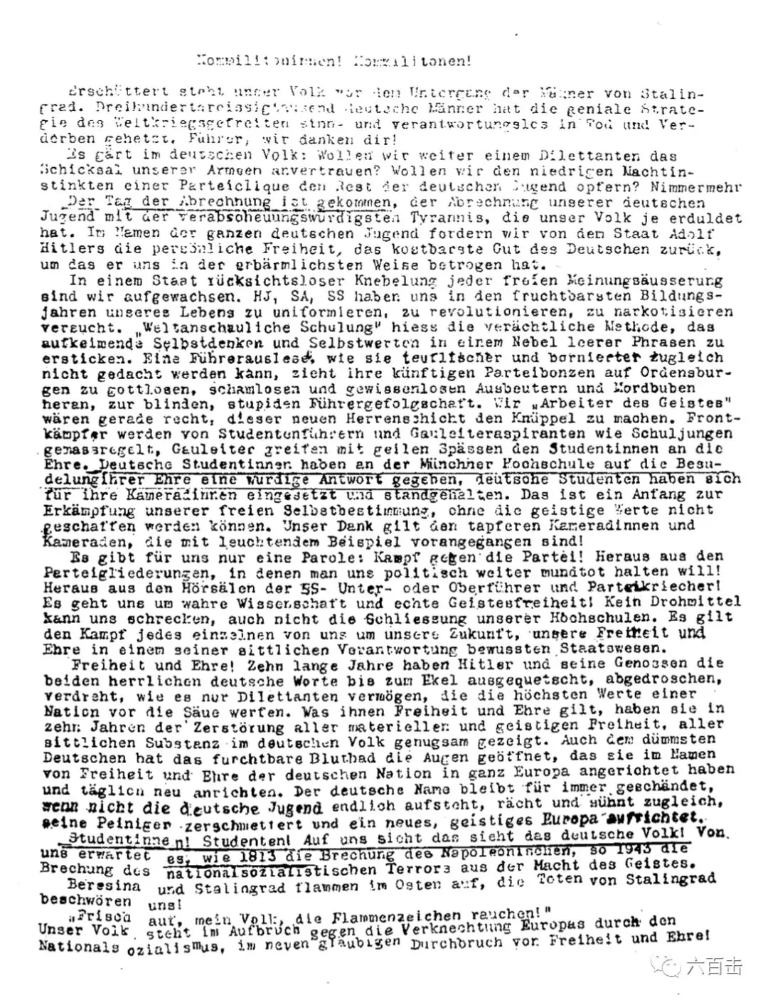
| 第六份传单
他们去世之后，第六份传单的副本被赫尔穆特·詹姆斯·冯·毛奇偷运出德国，通过斯堪的纳维亚半岛到了英国，这份传单被盟军改名叫慕尼黑学生宣言，最终盟军通过飞机将无数传单从空中洒向德国，自由和和平的火种撒入了无数德国人的心中。
这份传单发出的力量无法估量，大屠杀史家 Jud Newborn说“你不能衡量这种抵抗运动对于催动政权垮台的作用，白玫瑰的确有更大象征意义，但这也是重要的作用。”
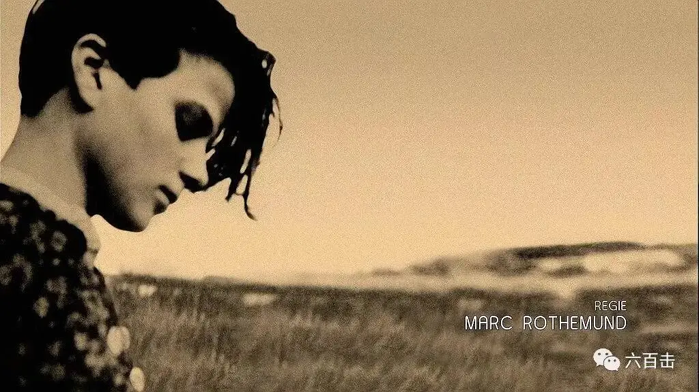
| 汉斯.绍尔
在邪恶面前，为何大多数人都在沉默，绍尔兄妹何以有如此敏锐的洞见和强大的道德勇气？
这个疑问同样留给了德国导演马克·罗特蒙德：
当年，包括我祖父母在内的成千上万的德国人，面对纳粹暴行采取了视而不见的态度，我希望对这种现象进行剖析。
于是马克·罗特蒙德将绍尔兄妹的故事搬上了银幕，创作了《希望与反抗》（又名帝国大审判）。
本片获奖无数，荣获2006年德国电影奖（最佳影片、最佳女主角）、柏林影展（最佳导演、最佳女主角、评审团大奖）、欧洲电影奖（最佳导演、最佳女主角）。
-01- 为启蒙铤而走险
电影主要聚焦于绍尔兄妹被抓前后的故事。
1943年，德国陷入到与苏联的苦战中，白玫瑰起草了第六份传单，宣扬独裁反动的纳粹必将失败。
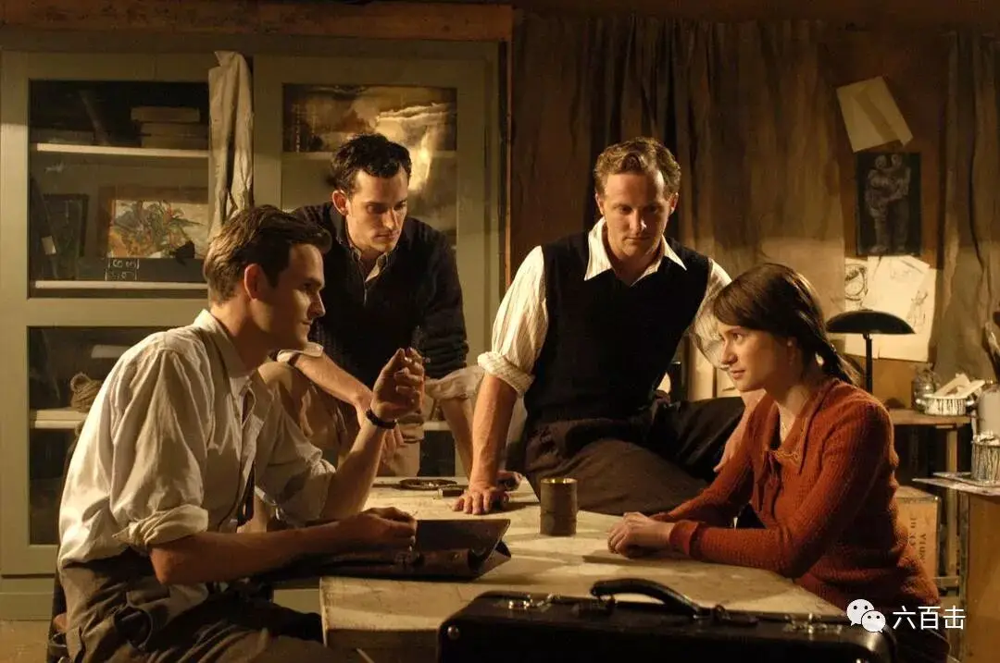
此前的五份传单都是通过信件秘密邮寄到各个城市，这一次，汉斯提出了一个大胆的想法，那就是直接将传单散发到慕尼黑大学里，希望通过这份传单，在学校掀起和平反战的浪潮。
白玫瑰其他成员觉得太危险，不同意汉斯的想法，但是汉斯的妹妹苏菲大胆地支持了自己的哥哥，并决心参与到此次行动中。
最终，白玫瑰决定放手一搏。
1943年2月18日，汉斯和苏菲在学生上课前来到慕尼黑大学主教学楼，手上提着装满传单的箱子，他们迅速将传单放在教学楼的各个角落。
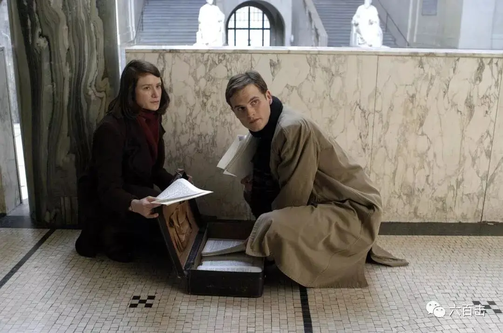
苏菲甚至在主楼光明殿二层向下抛撒传单，校工史密特看到之后迅速举报，盖世太保立即予以逮捕。
-02- 审讯
电影花了大部分篇幅来表现纳粹对绍尔兄妹的审讯，尤其着重表现对苏菲的审讯。
审讯苏菲的纳粹官员是经验老到的摩尔。
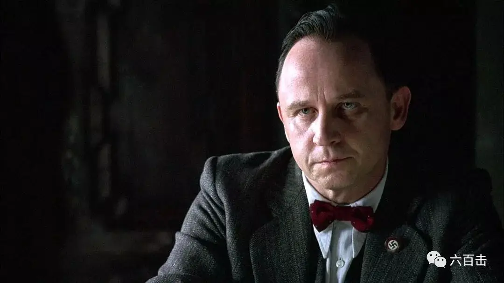
摩尔系着酒红色的领结，拥有一副令人不寒而栗的眼睛，仿佛什么事情都难逃他的双眼。
他的形象气质很像《沉默的羔羊》中的汉尼拔，只是少了份邪气，多了份严肃。
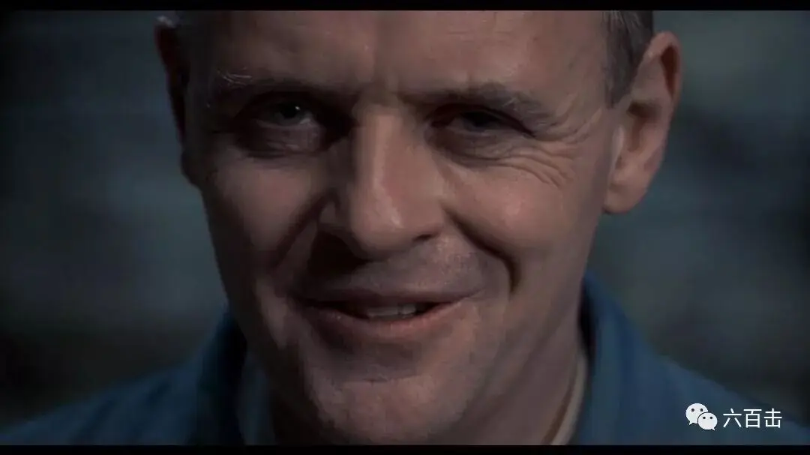
面对这样的对手，苏菲的处境令人担忧。
摩尔对苏菲的审讯一共进行了四次，从思维的对抗一直走向世界观的争辩，导演借着审讯深刻地剖析了纳粹的邪恶意识形态，并揭示了苏菲道德勇气的根源。
第一次审讯中，摩尔想尽一切办法想要让苏菲承认她是主要参与者，面对经验老到的摩尔，苏菲表现的非常淡定。
苏菲坚称自己只是路过，那些传单与自己没有任何关系，自己也从来都不关心政治。
苏菲的回答滴水不漏，摩尔虽然强势，却抓不到苏菲的把柄。
正当苏菲要等到释放令的时候，摩尔在他们的家中发现了端倪，在汉斯家中的抽屉里找过非常多的邮票以及一把手枪。
于是苏菲面临第二次审判，摩尔向苏菲盘问了所有的疑点，苏菲依旧很聪明地解释了所有的疑点，虽然有些牵强，但是没有很明显的破绽。
从苏菲身上得不到更多的信息，最终，摩尔告诉苏菲，她的哥哥汉斯已经认罪，并称所有一切都是他自己所为。
苏菲和汉斯的供词有很大的出入，苏菲最终认罪，承认她也参与了这次行动。
摩尔很清楚几千份传单的印刷、邮寄不可能单靠绍尔兄妹来完成，摩尔通过调查相继抓捕了白玫瑰的其他成员。
只是还缺少直接的证据，摩尔想要让苏菲指认其他人。
于是摩尔对苏菲进行了第三次审讯，摩尔威逼利诱，希望苏菲“戴罪立功”，但是苏菲坚称只是她和哥哥两人所为。
威逼利诱没有效果，最后一次审讯，摩尔企图击碎苏菲的错误观念，想要让苏菲意识到她这样的行为不仅错误，而且会给自己的家人和国家带来深重的灾难。
摩尔告诉苏菲，你在为错误的念头冒险，他很激愤地感慨，“为什么你如此有才，却不能具备国家社会主义的思维和感官，这可是会给德国人民带来自由、尊严、财富和正义的国家制度。”
苏菲则直接告诉摩尔：
纳粹分子借自由和尊严之名，在全欧洲掀起血雨腥风，难道还不能让你认清现实么，如果德国的年轻人不能最终剥夺希特勒的权力，并协助建立一个全新的开化的欧洲，那么德意志的名字就将永世蒙羞。
这样的言论对于摩尔很熟悉，因为他自己的孩子就是这样的“异见分子”，摩尔在苏菲的身上看到了自己孩子的影子。
他对苏菲有了一丝长辈之情，摩尔不断地暗示苏菲，只要承认其他人也参与了传单制作及发放，他可以为苏菲争取更轻的处罚。
苏菲毫不妥协，并向摩尔控诉希特勒对犹太人及残弱者的屠杀：
尽管在被德国征服的波兰中，已经有30万的犹太人在这个国家被以最残忍的手法屠杀...
德国人仍然笨拙的静止不动，愚蠢的沉睡着，并且助长那些法西斯的罪行...
任何人都希望对于此类的行为能被宣告无罪，每个人都希望继续以最平静的步伐，最平淡的良心走完人生的路途。
但他不会被宣告无罪，他将有罪、有罪、有罪！
（白玫瑰第二份传单）
而被纳粹主义洗脑的摩尔却认为他们根本不配活着。
苏菲激动地告诉摩尔：
谁都无权决定他人的命运，无论在什么情况下，这一权利只有上帝才有，没有人知道一个精神病患者内心有着怎样的灵魂，没有人知道，苦难的环境会锻造出怎样的内心世界，每个生命都是珍贵的。
苏菲的观点在摩尔看来是一种理想主义的不切实际，摩尔告诉苏菲，“你所说的和现实生活没有关系吧！！”
苏菲非常坚决地说“这事关正义，道德和上帝”。
摩尔拍案而起，“上帝是不存在的”
这场正义和邪恶的争斗实质上是信仰之争，是上帝根基上的自由和希特勒吹嘘的自由之争，是有神论和无神论之争。
没有了信仰根基，自由、法律也会沦为施行邪恶的手段。
- 03 - 最后的审判
绍尔兄妹始终没有出卖自己的朋友，而迎接他们的是一场早已安排好的封闭法庭审判。
纳粹想要通过这次审判，以一儆百。
在走向审判前，苏菲在监狱里向上帝祈祷，她深知上帝是她真正的避难所。
封闭的法庭、全副武装的军人、咄咄逼人的法官，纳粹想要看到的是绍尔兄妹的跪地求饶。
但是，庭审现场，绍尔兄妹虽然内心充满恐惧，但始终没有向纳粹低头，依旧勇敢地讲出了还没有泯灭良心的沉默者的心声。
苏菲告诉法官：
毕竟，有些人要做先驱，因为我们所写的，说的，也被许多人认同，但他们不敢像我们一样表达出来。
法官只能气急败坏的让绍尔兄妹闭嘴。
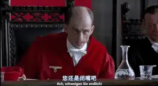
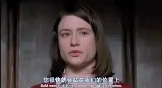
最终，绍尔兄妹以及白玫瑰其他核心成员均被判死刑。
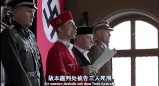
数小时之后，纳粹便迫不及待地将三人送上断头台。
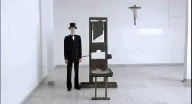
-04- 自由的根基
年仅20多岁的绍尔兄妹何以如此清醒，又何以有如此大的勇气面对邪恶。
导演通过电影向观众揭示：那是缘于忠于信仰和真理的良心自由。
没有信仰光照的良心是不完备的良心，很容易随波逐流或者陷入到纵容邪恶的沉默和自欺中。
信仰会给予良心坚实的根基，会给出超越性的参照点，这也是为什么民主、法制会脱胎于基督教文明。
纳粹走向邪恶的第一步是走向无神论，失去了对上帝的信仰，也就失去了对人的敬畏和尊重，所以犹太人在他们眼中会变成猪，残弱者在他们眼中会变成一无是处的累赘。
信仰不仅给了绍尔兄妹明辨是非的眼睛，更给了他们直面黑暗的勇气。
面对摩尔咄咄逼人的审问，苏菲逐步步入险境，但是祷告和信仰给了她力量。
甚至当苏菲被判死刑后，她恐惧到了极点，思绪一片空白，但是当他抬头忽然看到定在十字架上的耶稣时，她的心又重得安慰和盼望。
所以，当苏菲的母亲无法面对苏菲的死刑时，苏菲用信仰安慰了年迈的母亲。
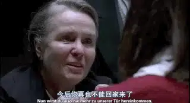
甚至，信仰给了苏菲更加宽广的胸怀，当苏菲看到伫立在远处怅然若失的摩尔时，她明白摩尔此刻是一种未能使“不懂事”的晚辈“回头”的失落，苏菲安慰原谅了置自己于死地的敌人。
而绍尔兄妹深受奥古斯特.冯.加伦主教影响。
冯.加伦主教在二战期间，大胆斥责纳粹的暴行，他的座右铭是：“我为反对纳粹政权的新异教主义而斗争，无须褒扬，无须畏惧”。
冯.加伦被誉为“明斯特的雄狮”，他如先知一样，向德国同胞提出警告：
人类有祸了，我们德国有祸了，因为违背了上帝在西奈山的密云和雷电中所颁布的‘不可杀人’的神圣诫命。
造物主起先就将之镌刻在人类的良心里，现在人不只是背叛了，而且实际上是纵容了这种罪行，允许它逍遥法外，脱免惩处……
上帝是通过我们的良心在对我们说话，让我们都听听良心的声音吧。人必须顺从上帝甚于世人！
冯.加伦主教的布道影响了无数人，其中包括绍尔兄妹。
在一封1941年12月22日给卡尔·姆特的信中汉斯·朔尔写道：
我非常高兴在我一生中第一次清楚地作为一个基督徒来过圣诞节。
儿时的记忆还没有全部被吹散，那时我们无忧无虑地看着母亲欢乐的面庞，但是阴影升起了。
在一段没有支撑的时间里我求助于无用的道路，但这些道路的终点始终是被遗弃的感觉，始终是同样的空虚。
我有过两次非常深刻的体验，今后我还会对您说。
最后是这样可憎的战争，这个无底洞，它从下面吞噬所有男人的灵魂，试图杀死他们，这使我更加感到孤独。
但终于有一天解脱到来了，我听到了主的名字，听到他的声音。
这时我第一次遇到了您。此后就一天比一天亮了，最后我终于明白了。
我祈祷，我感觉到一个稳固的基础，我看到了一个可靠的目标，今天对我来说耶稣再生了。
我们不得不赞美，即使在最黑暗绝望的时候，上帝依旧掌权，并使万事互相效力。
绍尔兄妹的生命历程，更让我们在这谎言时代里警醒：“不可叫人小看你年轻，总要在言语、行为、爱心、信心、清洁上，都作信徒的榜样。”
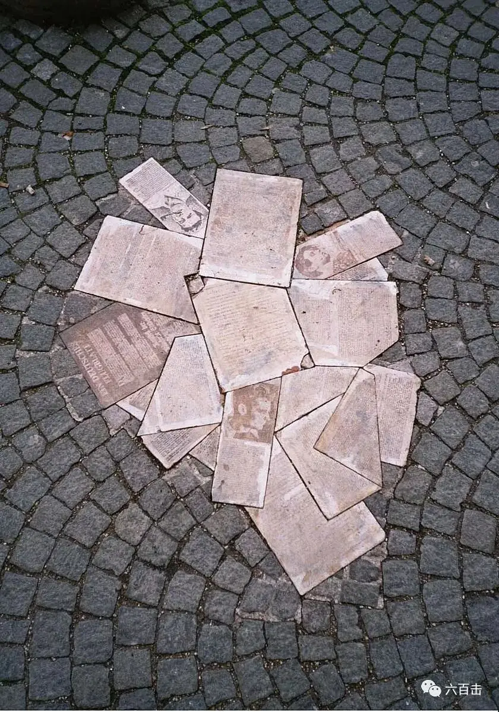
| 慕尼黑大学门前的白玫瑰纪念碑
关注并回复：白玫瑰
获取电影资源
相关推荐：
《乡愁》 | 没有一个人能够将信仰拍的如此诗意和凝重
100双绝望的眼睛
奥斯卡影帝，你把自己演死了
这里没有挑逗你眼目情欲的小鲜肉
也没有挑动你肉体情欲的段子
更没有膨胀你今生骄傲的鸡血
我们只在乎那些最质朴真诚的作品
在那里我们才能恢复真正的想象力
我们也坚信这才是我们真正需要的

ID:Six_hundred_hits
长按二维码，一键关注
【六百击】
-END-
电影评论
尽情分享朋友圈

苹果打赏
通道
小提示：文末广告是腾讯配送广告，内容与本号无关，但您的每次点击（无需反复点）都会给平台带来几毛收益，欢迎您点击支持六百击。